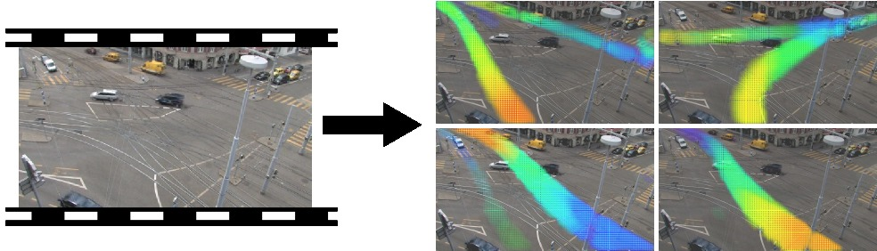
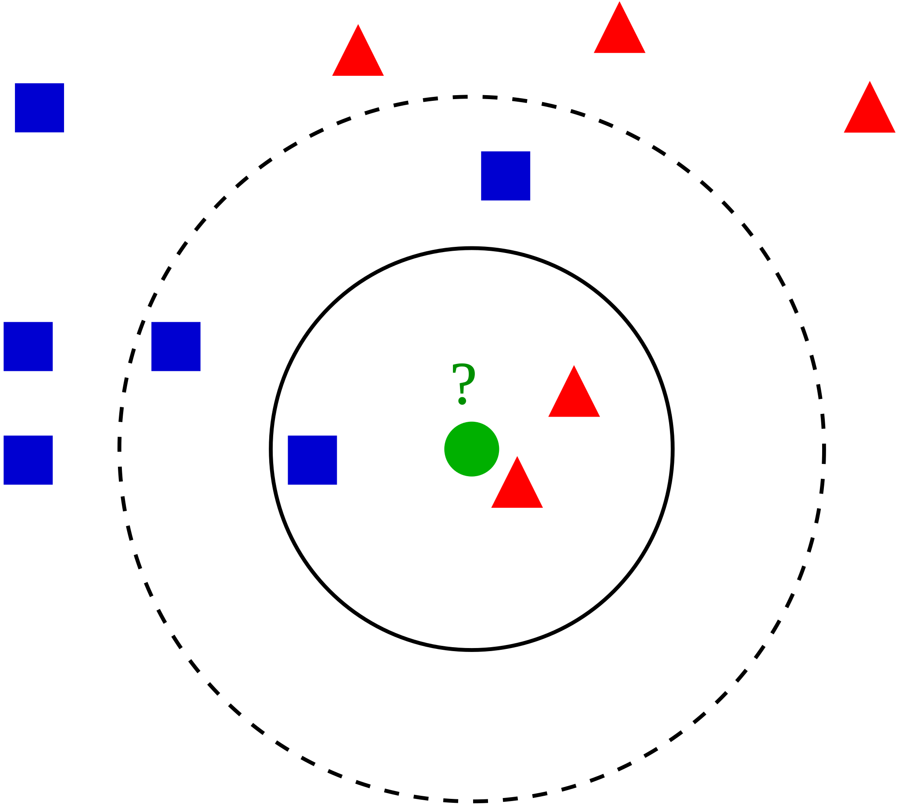
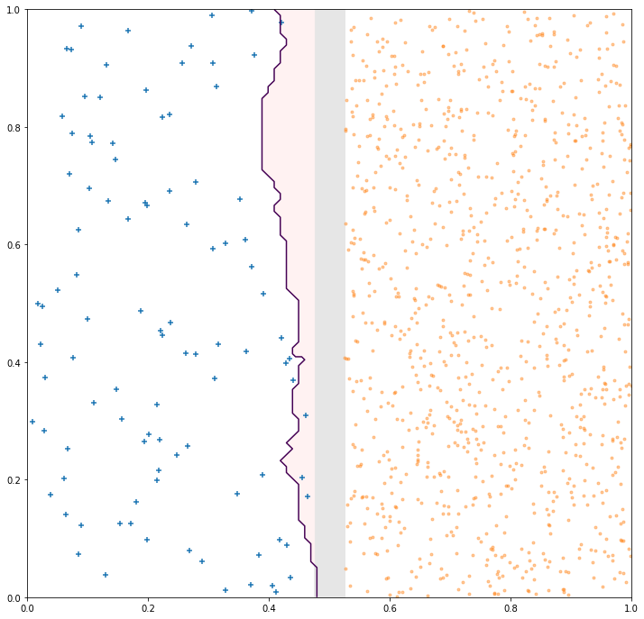
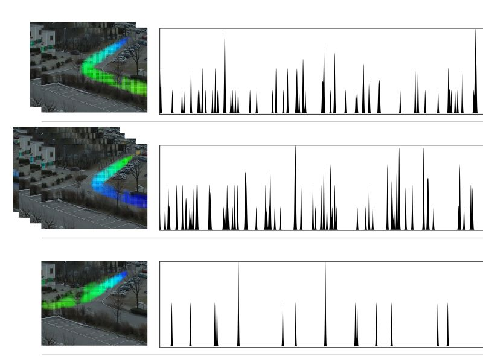
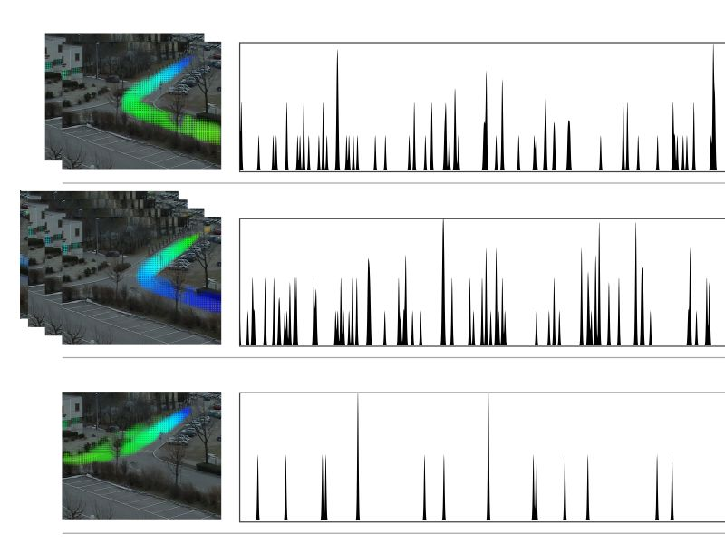

@sticky-now
@sticky-add: @:libyli
@:title-slide /no-status
# // comment
 - {{ nd.vars.author }} {.no}
- {.no}
- Talk at {{ nd.vars.venue }}, {{ nd.vars.date }} {.no}
@for-copy
@:#overview overview no-libyli
## Overview
- Introduction
- Anomaly and fraud detection
- Imbalanced classification problems
- The Problem (and performance measures)
- Reweight, resampling, etc
- Learning maximum excluding ellipsoids
- Correcting k-NN: *$\gamma$-NN@:accro*
- Focusing on the F-Measure optimization
- Probabilistic models for unsupervised anomaly detection
- Discussion
@eval-header: return highlightLi(1)
# @copy: overview
@:.denser /no-status
## Laboratoire Hubert Curien
- Optic-Photonic & Microwaves:
- Micro & nano structuration
- Laser Processes
- Materials & Surfaces
- Functionalization of surfaces
- Materials for harsh environments
- Informatics, Telecom & Image:
- Images Analysis
- Data intelligence
- Secured embedded Systems
@:.dense
## “Data Intelligence” Team:
- {{ nd.vars.author }} {.no}
- {.no}
- Talk at {{ nd.vars.venue }}, {{ nd.vars.date }} {.no}
@for-copy
@:#overview overview no-libyli
## Overview
- Introduction
- Anomaly and fraud detection
- Imbalanced classification problems
- The Problem (and performance measures)
- Reweight, resampling, etc
- Learning maximum excluding ellipsoids
- Correcting k-NN: *$\gamma$-NN@:accro*
- Focusing on the F-Measure optimization
- Probabilistic models for unsupervised anomaly detection
- Discussion
@eval-header: return highlightLi(1)
# @copy: overview
@:.denser /no-status
## Laboratoire Hubert Curien
- Optic-Photonic & Microwaves:
- Micro & nano structuration
- Laser Processes
- Materials & Surfaces
- Functionalization of surfaces
- Materials for harsh environments
- Informatics, Telecom & Image:
- Images Analysis
- Data intelligence
- Secured embedded Systems
@:.dense
## “Data Intelligence” Team:
**Machine Learning and Complex Data Analysis**{.dense}
The team is specialized in statistical machine learning and
data analysis and addresses mainly the following areas:
- **Representation Learning:** Deep Learning, Embedding for
structured data (graphs, texts, images, sequences),
incorporation of background knowledge and
interpretability.
- **Metric Learning:** optimizing ad hoc metrics
(distance/similarity) under semantic constraints.
- **Transfer Learning and Domain Adaptation:** Adapting
and transferring models to new tasks or domains.
Metric Learning
- **Learning theory:** Developing theoretical guarantees,
formal frameworks and interpretation for learned
models. (PAC-Bayesian Theory, Optimal Transport, ...)
@:.dense
## “Data Intelligence” Team:
**Machine Learning and Complex Data Analysis**{.dense}

- **Data Mining:** Designing large scale methods to extract
relevant and meaningful information from structured data,
such as graphs or sequences, in the form of frequent or rare
(spatio-temporal) patterns.
- **Learning/Analyzing from difficult scenarios:** Dealing with
highly imbalanced data, few learning samples, incomplete
data, privacy and fairness constraints.
- **Flagship Applications:**
- Anomaly and Fraud Detection
- Computer Vision
- Medical data Analysis
- Textual Data Analysis
- Social Network Analy
@@@@@@@@@@ INTRO TWO APPROACHES @@@@@@@@@@
@eval-header: return highlightLi(2)
# @copy: overview
## Supervised / Unsupervised *Machine Learning*{.dense .step}
@anim: #sup | #suppoints | #unsup,#unsuppoints | #separator | #groups | #voronoi
@: .dense
## Supervised vs Unsupervised Learning
- Supervised
- Given example inputs ($X$) and corresponding outputs ($y$)
- Learn the fonction “input → output” ($y = f(X)$)
- classification (categorical output)
- regression (continous output)
- methods:
- k-NN, SVM, SVR, Random Forests, Least Squares fit, {.no}
- Neural Networks, Gaussian Processes, Boosting, ... {.no}
- Unsupervised
- Given a set of data points ($x$)
- Model/structure/understand this dataset
- clustering, densitiy estimation
- source separation
- pattern and sequence mining
- rare events / anomaly detection
- Methods:
- PCA, k-means, OneClass-SVM, Isolation Forests, PGM (GMM, HMM, ...), {.no}
- DBSCAN, Autoencoders, GANs, KDE ... {.no}
## Sup. / Unsup. *Anomaly Detection*{.dense .step}
@anim: #sup | #suppoints | #unsup,#unsuppoints | #separator | #groups | #supqueries | #unsupqueries
# Class Imbalance or Novelty???
@@@@@@@@@@ IMBALANCED @@@@@@@@@@
@eval-header: $o.s = 3
@eval-header: return highlightLi($o.s, 1)
# @copy: overview
## Imbalanced Problems: Examples // generally, but at the lab
- Anomaly detection *// incl images*
- unsafe situations in videos // bluecime, first step into it for me
- defect detection in images // often as out-of-distribution though
- abnormal heart beat detection in ECG
- Fraud detection
- fraudulent checks
- credit card fraud (physical, online)
- financial fraud (French DGFIP) // Dir. Géné. des Fin. Pub.
- @:displaynone // TODO: add illustr
## Imbalanced Classification Problems // generally, but at the lab
- Binary classification
- $+$ positive class: minority class, anomaly, rare event, … {.no}
- $-$ negative class: majority class, normality, typical event, … {.no}
- Confusion matrix (of a model vs a ground truth)
- TP: true positive
- FP: false positive
- TN: true negative
- FN: false negative
- @anim: #predp | #tpetal
- Some measures {.padli .densemath}
- Precision: $prec=\frac{TP}{TP+FP}$
- Recall: $rec=\frac{TP}{P} = \frac{TP}{TP+FN}$
- $F_\beta$-measure: $F_\beta = (1+\beta^2)\frac{prec\cdot rec}{\beta^2 \cdot prec + rec}$ \
*(higher is better)*{.dense}
## F-measure vs Accuracy ?
- $F_\beta = (1+\beta^2)\frac{prec\cdot rec}{\beta^2 \cdot prec + rec} = \frac{(1+\beta^2)\cdot (P - FN)}{1 + \beta^2 P - FN + FP}$ \
{.no}
- $accuracy = \frac{TP + TN}{P+N} = 1 - \frac{FN+FP}{P+N}$
{.no}
- Accuracy inadequacy (e.g. $N=10000, P=100$)
- lazy "all$-$" classifier ($TP=0, TN=N, FP=0, FN=P$)
- $\textstyle \textcolor{orange}{accuracy} = \frac{0 + N}{P + N} = \frac{10000}{10100} \textcolor{orange}{= 99\\%}$
- $\textstyle \textcolor{orange}{F_\beta} = \frac{(1+\beta^2) (P - P)}{1 + \beta^2 P - P + 0} \textcolor{orange}{= 0}$
- $F_\beta$-measure challenges
- discrete (like the accuracy)
- non-convex (even with continuous surrogates)
- **non-separable**, i.e. $F_\beta \ne \sum_{(x_i, y_i) \in S}...$
// TODO maybe a schema for the trivial case
## Ok, but… I'm doing gradient descent, so…
 - Gradient: $0.2$ ⇒ $-7.21$, $0.5$ ⇒ $-2.89$, $0.8$ ⇒ $-1.80$, $1$ ⇒ $-1.44$
- Example, gradient intensity is the same for:
- $10$ $+$ wrongly classified with an output proba. of $0.2$
- $40$ $-$ correctly classified with an output proba $0.8$
- i.e., lazily predicting systematically $0.2$ (for $+$)
- Gradient: $0.2$ ⇒ $-7.21$, $0.5$ ⇒ $-2.89$, $0.8$ ⇒ $-1.80$, $1$ ⇒ $-1.44$
- Example, gradient intensity is the same for:
- $10$ $+$ wrongly classified with an output proba. of $0.2$
- $40$ $-$ correctly classified with an output proba $0.8$
- i.e., lazily predicting systematically $0.2$ (for $+$)
yields a "stable" solution with $10+$ vs $40-$
## Ok, but… my deep model does 100%…
- ... the 100% accuracy is on the train set
- ... I cannot tell you if it will generalize well
- Our team is working on these aspects
- [APRIORI ANR project](https://project.inria.fr/apriori/)
- guarantees for deep representation learning
@eval-header: return highlightLi($o.s, 2)
# @copy: overview
## Counteracting Imbalance
- Undersampling the majority class $-$
- Oversampling class $+$
- Generating fake $+$
- Using a weighted-classifiers learner
// For models that learn, can reweigh but not perfect (ideal ratio depends on Bayesian error and régularisation etc) can x valid?
@eval-header: return highlightLi($o.s, 3)
# @copy: overview
@:paperattrib #gammann no-libyli
## Learning maximum excluding ellipsoids from imbalanced data with theoretical guarantees
- **Guillaume Metzler**, Xavier Badiche, Brahim Belkasmi, Elisa Fromont, Amaury Habrard, Marc Sebban
- PRL2018 (Pattern Recognition Letters)
- . {.no}
- (slides borrowed from Guillaume Metzler Ph.D. defense)
##
##
##
##
##
##
##
##
##
##
@eval-header: return highlightLi($o.s, 4)
# @copy: overview
@:paperattrib #gammann no-libyli
## An Adjusted Nearest Neighbor Algorithm Maximizing the F-Measure from Imbalanced Data
- **Rémi Viola**, Rémi Emonet , Amaury Habrard,
**Guillaume Metzler**, Sébastien Riou, Marc Sebban
- ICTAI2019
## k-NN: $k$ Nearest Neighbor Classification

- k-NN {.step}
- to classify a new point
- find the closest k points
(in the training section)
- use a voting scheme to affect a class
- efficient algorithms
(K-D Tree, Ball Tree)
- Does k-NN still matter? *// yes non-conv thing, easy adaptability, etc*
- non-linear by design (with similarity to RBF-kernel SVM)
- no learning, easy to patch a model (add/remove points) // e.g. ECML
- Limits of k-NN for imbalanced data?
## Limits of k-NN for imbalanced data?
1. k-NN behavior in uncertain areas
- i.e., for some feature vector, the class can be $+$ or $-$
- i.e., the Bayes Risk is non zero
- ✔ not so bad, 1-NN respects imbalance (not k-NN)
2. k-NN behavior around boundaries
- i.e., what happens if classes are separate but imbalanced
- ✖ sampling effects cause problems
@: centerimage
## 1-NN at a boundary (1000 $+$ / 10k $-$)
@: centerimage
## 1-NN at a boundary (100 $+$ / 1000 $-$)
@: centerimage
## 1-NN at a boundary (10 $+$ / 100 $-$)
 ## 11-NN: increasing k? // (from 1 to 11)
## 11-NN: increasing k? // (from 1 to 11)

- @anim: #NOTHING | div
# @copy: gammann
## $\gamma$-NN Idea: push the decision boundary
 - Goal: correct for problems due to sampling with imbalance
- Genesis: GAN to generate "$+$" around existing ones
- ⇒ unstable, failing, complex @:no
- Approach
- artificially make $+$ closer to new points
- how? by using a different distance for $+$ and $-$
- the base distance to $+$ gets multiplied by a parameter $\gamma$
(intuitively $\gamma \le 1$ if $+$ is rare)
- Goal: correct for problems due to sampling with imbalance
- Genesis: GAN to generate "$+$" around existing ones
- ⇒ unstable, failing, complex @:no
- Approach
- artificially make $+$ closer to new points
- how? by using a different distance for $+$ and $-$
- the base distance to $+$ gets multiplied by a parameter $\gamma$
(intuitively $\gamma \le 1$ if $+$ is rare)
\def{\x}{\mathbb{x}}
d_\gamma(\x,\x_i) = \begin{cases}
d(\x,\x_i) & \text{if} \; \x_i\in S_-,\\
\gamma \cdot d(\x,\x_i) & \text{if} \;\x_i\in S_+.
\end{cases}
## $\gamma$-NN: varying $\gamma$ with two points
@anim: #g78,#g146 | #g66,#g134 | #g56,#g122 | #g46,#g110 | #g88,#g160
## $\gamma$-NN: varying $\gamma$ with a few $+$
- $\gamma$-NN can control
how close to the minuses it pushes the boundary
## $\gamma$-NN: Algorithm
 - Trivial to implement
- Same complexity as k-NN (at most twice)
- Training
- none, as k-NN
- $\gamma$ is selected by cross-validation
- Trivial to implement
- Same complexity as k-NN (at most twice)
- Training
- none, as k-NN
- $\gamma$ is selected by cross-validation
(on the measure of interest)
## $\gamma$-NN: a way to reweight distributions
- In uncertain regions // when we have more and more points
- At the boundaries // depends on intrisic dimensionality
@:/no-status
## Results on public datasets (F-measure)
 @:/no-status
## Results on DGFiP datasets (F-measure) // underline = second
## $\gamma$-NN at a boundary (10 and 100 $+$)
## (some) Work in progress
- Note:
- $\gamma$-NN learns a metric for comparing a query to a $+$
- $\gamma$-NN kind of learn the size of a sphere around $+$
- this is “Metric Learning”
- Extension
- learn a full metric (a matrix $M$ and not only $\gamma$)
- derive a learning algorithm (not just cross-validation)
##
@:/no-status
## Results on DGFiP datasets (F-measure) // underline = second
## $\gamma$-NN at a boundary (10 and 100 $+$)
## (some) Work in progress
- Note:
- $\gamma$-NN learns a metric for comparing a query to a $+$
- $\gamma$-NN kind of learn the size of a sphere around $+$
- this is “Metric Learning”
- Extension
- learn a full metric (a matrix $M$ and not only $\gamma$)
- derive a learning algorithm (not just cross-validation)
##
@eval-header: return highlightLi($o.s, 5)
# @copy: overview
@:paperattrib no-libyli
## From Cost-Sensitive Classification to Tight F-measure Bounds
- **Kevin Bascol**, Rémi Emonet, Elisa Fromont, Amaury Habrard,
**Guillaume Metzler**, Marc Sebban
- AISTATS2019
## Optimizing the $F_\beta$-measure?
- Reminder {.padli .densemath}
- Precision: $prec=\frac{TP}{TP+FP}$
- Recall: $rec=\frac{TP}{P} = \frac{TP}{TP+FN}$
- $F_\beta$-measure: $F_\beta = (1+\beta^2)\frac{prec\cdot rec}{\beta^2 \cdot prec + rec}$
- **Non-separability**, i.e. $F_\beta \ne \sum_{(x_i, y_i) \in S}...$
*NB: accuracy is separable, $acc = \sum_{(x_i, y_i) \in S} \frac{1}{m} \delta(y_i - \hat{y_i})$ @:denser*
- ⇒ The loss for one point depends on the others {.no}
- ⇒ Impossible to optimize directly {.no}
- ⇒ Impossible to optimize on a subset (minibatch) {.no}
## Weighted classification for $F_\beta$
- $F_\beta = \frac{(1+\beta^2)\cdot (P - FN)}{1 + \beta^2 P - FN + FP} = \frac{(1+\beta^2)\cdot (P - e_1)}{1 + \beta^2 P - e_1 + e_2}$
{.no}
- The $F_\beta$-measure is linear fractional *(in $e = (e_1, e_2) = (FN, FP)$) @:dense*
- i.e. $F_\beta = \frac{\langle a', e\rangle + b}{\langle c, e\rangle + d} = \frac{A}{B}$ {.no}
- Relation to weighted classification
- $\hphantom{\Leftrightarrow } F_\beta \ge t$ (we achieve a good, above $t$, $F_\beta$ value) {.no}
- $\Leftrightarrow A \ge t\cdot B$ {.no}
- $\Leftrightarrow A - t\cdot B \ge 0$ {.no}
- $\Leftrightarrow (1+\beta^2)\cdot (P - e_1) - t ( 1 + \beta^2 P - e_1 + e_2) \ge 0$ {.no}
- $\Leftrightarrow (- 1 - \beta^2 + t) e_1 - t e_2 \ge - P (1 + \beta^2) + t ( 1 + \beta^2 P)$ {.no}
- $\Leftrightarrow (1 + \beta^2 - t) e_1 + t e_2 \le - P (1 + \beta^2) + t ( 1 + \beta^2 P)$ {.no}
- ⇒ so, we can minimize the weighted problem
with class weights $a(t) = (1 + \beta^2 - t, t)$ {.no}
# CONE Demo...
- contact me to know if the demo is publicly available yet
@eval-header: $o.s++
@eval-header: return highlightLi($o.s)
# @copy: overview
# Learning normality
## Unsupervised Temporal Motif Mining
in videos / temporal data (spectrograms, ...)
@anim: #layer1 + -#init | #layer2 | #layer3 | #layer6 | #layer7 | #layer4 | #layer5
## Temporal Patterns in Videos: Full Process
- @anim: #layer1 | #shortll | #tdocetc | #shorttm | #layer7 | #layer5
- @anim: #layer6 + -#layer3
- @anim: -#layer6 + #layer2
## Video Motif Representation {blacktspan}
- @anim: #motiftable | #rt0 | #rt1 | #rt2 + #rt3 + #rt4 + #rt5 | #giffy | #arrow + #magic
# Example Motifs Obtained from a Static Camera
@:.img3inwidth
##


 @:.imagets
## Application with Static Cameras
- 
@:.imagets
## Application with Static Cameras
- 
scene understanding
-
car counting
-
anomaly detection
-
stream selection, anomaly detection, multi-camera analysis
@:.imagets
## Audio data?
- 
a pair of microphones…
-
… meaningful motifs…
-
… and good counting results
- ... also with spectrograms
# How Can We Do This?!
## Sol. 1: Hierarchical Probabilistic Models
$\hspace{1cm}\mathcal{L} = \sum\_d \sum\_w \sum\_{t\_a} n(w,t\_a,d) log \sum\_z \sum\_{t\_s} p(w,t\_r|z) p(z,t\_s|d)$ {center}
- Generative Model
⇒ interpretable by design
- ⚠ unknown number of motifs
⇒ use infinite models
- Inference
- maximum likelihood, EM like
- Sparsity on occurrences $p(ts|z, d)$
- new objective function: \
$\mathcal{L} - \lambda\_{sparse} \sum\_d \sum\_z KL(U || p(ts|z, d))$
## Sol. 2: Neural Networks, Auto-encoders
- Principle of auto-encoders
- learn to produce the input from the input
- going through a limited-size representation (bottleneck)
- $x' = f(x) = f_{DEC}(f_{ENC}(x))$
- minimize the reconstruction error $d(x, x') = \left\\|x - x'\right\\|^2$
- ⚠ Issues: interpretability, number of motifs, ...
## Sol. 2: Interpretable Auto-Encoders
 - Add specific operators (layers)
- global specialized maximum selection (AdaReLU)
- locally, filter response decorrelation
- Special Loss: a combination of well-chosen target functions
- encourage sparse motifs (with a lot of zero)
- encourage sparse activations
- ⚠ unknown number of motifs ⇒ use “group-sparsity”
@eval-header: $o.s++
@eval-header: return highlightLi($o.s)
# @copy: overview
@:/title-slide
# Thank you! Questions?{.captain}
@sticky-add: @off
# MORE (from before but there is a lot more more in 2019-10-17)
- idea: new robust distance: min l_inf dist on a subset of features,, or min l2 on a fixed-size subset of features ( subset fixed or not ?)
- Add specific operators (layers)
- global specialized maximum selection (AdaReLU)
- locally, filter response decorrelation
- Special Loss: a combination of well-chosen target functions
- encourage sparse motifs (with a lot of zero)
- encourage sparse activations
- ⚠ unknown number of motifs ⇒ use “group-sparsity”
@eval-header: $o.s++
@eval-header: return highlightLi($o.s)
# @copy: overview
@:/title-slide
# Thank you! Questions?{.captain}
@sticky-add: @off
# MORE (from before but there is a lot more more in 2019-10-17)
- idea: new robust distance: min l_inf dist on a subset of features,, or min l2 on a fixed-size subset of features ( subset fixed or not ?)